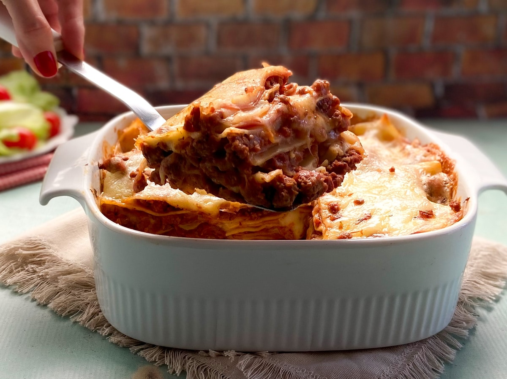

Lasagna
Home

This homemade lasagna is a classic layered pasta dish that combines seasoned ground beef with rich tomato sauce, slices of ham,
and plenty of melted cheese.
The noodles are boiled until tender, then assembled in layers with sauce, ham, and mozzarella, creating a hearty, comforting meal.
After baking in the oven until the cheese is bubbly and golden, the lasagna becomes a satisfying dish perfect for family dinners or gatherings.
Ingredients:
- 1 pack of ready-to-use lasagna sheets
- A splash of olive oil
- 500 g ground beef
- 500 g sliced ham
- 500 g mozzarella cheese (sliced)
- 340 g tomato sauce
- Salt and black pepper to taste
- Oregano to taste
Steps:
- In a non-stick pan over medium heat, warm a splash of olive oil and add the ground beef.
Cook for about 10 minutes, stirring occasionally, until browned.
- Add the tomato sauce, salt, oregano, and black pepper to the meat. You can also add other herbs like basil or thyme if you like.
- In another pot, bring water to a boil and cook the lasagna sheets according to the package instructions.
- To assemble, spread a generous layer of the meat sauce on the bottom of a baking dish.
- Place a layer of lasagna sheets over the sauce, then add a layer of ham and a layer of mozzarella.
- Repeat layering — sauce, pasta, ham, cheese — until you reach the top of the dish. Finish with a layer of cheese.
- Bake in a preheated oven at 180 °C (350 °F) for about 30 minutes, until the cheese is melted and lightly golden.
- Remove from oven, let rest briefly, and serve warm.